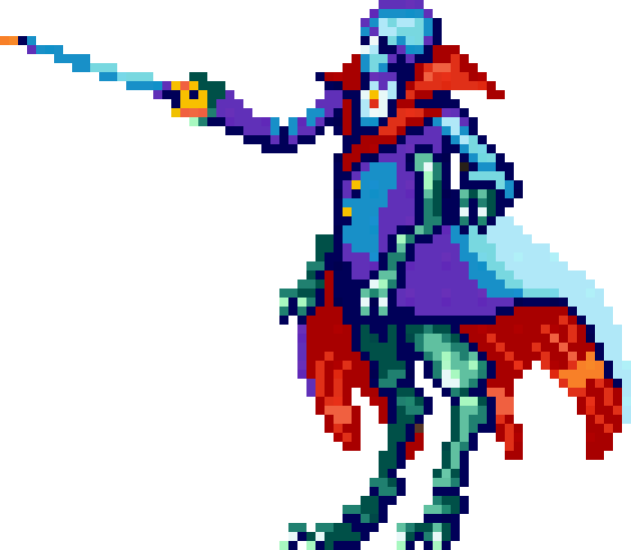
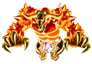
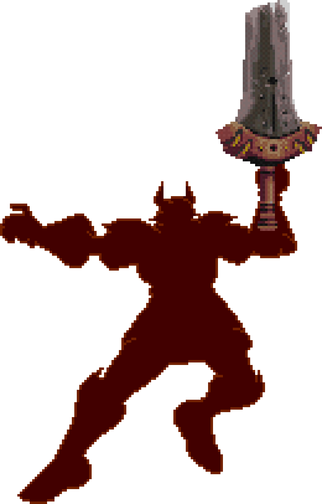
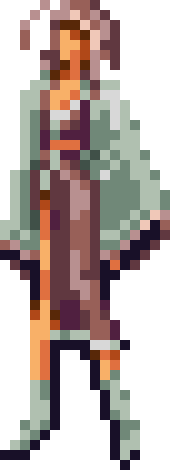
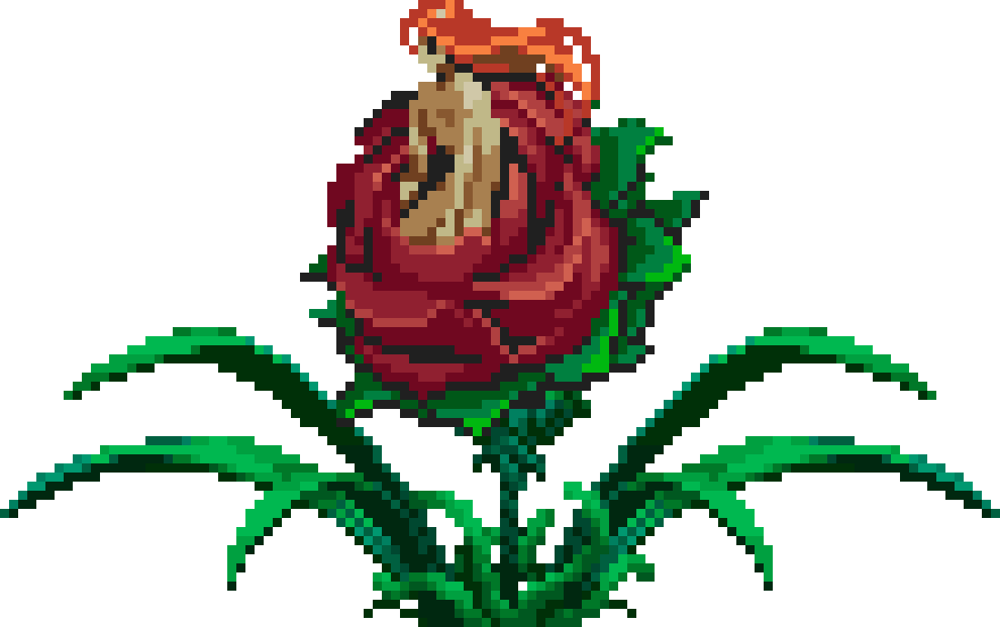
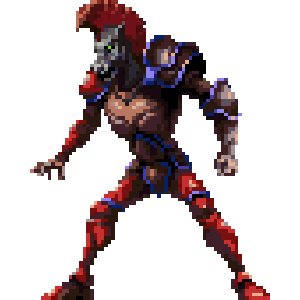
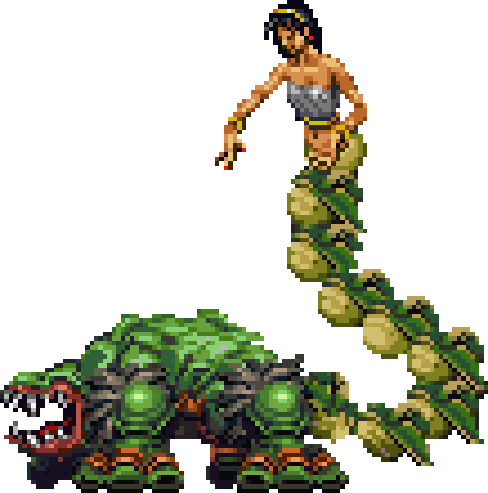
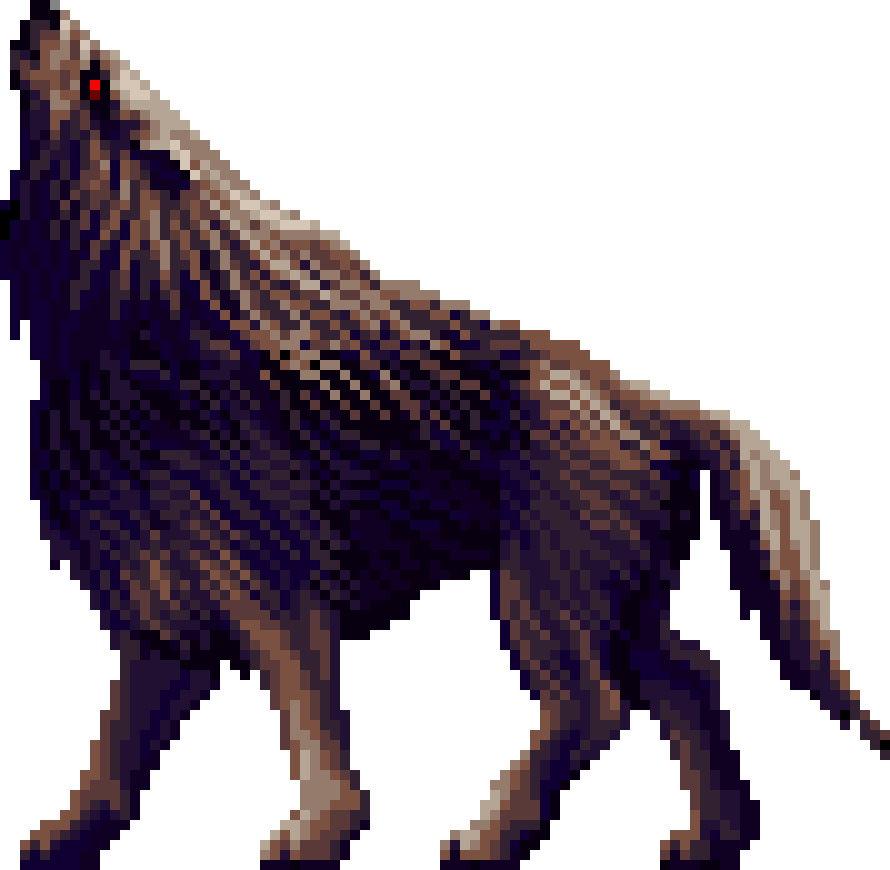
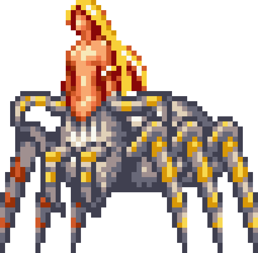

Abaddon es la criatura saltarina similar a un lagarto que aparece en Dawn of Sorrow. Su nombre proviene del hebreo y significa "destrucción" o "perdición". En textos bíblicos, se le asocia con el ángel del abismo infinito, representando una fuerza de aniquilación pura que comanda plagas de langostas.
También deletreado como "Adramelech", es mencionado como uno de los demonios superiores del infierno. En la Biblia cristiana se le asocia con ritos oscuros, y posee un posible origen asirio. Aunque en el juego tiene una forma similar a una cabra, su descripción mítica original suele ser la de un monstruo mitad buey y mitad pavo real.

Llamado "Aguni" en la versión en inglés de Dawn of Sorrow, Agni es el importante dios del fuego en la mitología hindú. Es una de las deidades más relevantes del panteón védico, actuando como mensajero entre los mortales y los dioses. Su nombre es también la palabra sánscrita para designar al "Fuego" sagrado.
En la mitología griega, Alastor es el espíritu de la venganza. Originalmente fue un mortal, pero tras ser asesinado por Hércules, su espíritu persistió para vengar su propia muerte. En la versión en inglés de algunos juegos, estas criaturas son llamadas simplemente "Vandal Swords", mientras que en Japón se conocían como "Victory Armors".
Este es the nombre japonés de la "Salem Witch" (Bruja de Salem). En el folclore gótico, se describe como una de las diversas brujas que fueron conducidas al exilio por el legendario Rey Filimer. Representa el arquetipo de la hechicera desterrada que utiliza artes oscuras para sobrevivir en tierras salvajes.
Conocidas como "Venus Weeds" en Symphony of the Night. Su nombre se popularizó por una novela de los años 30 sobre un científico que creó a una mujer a partir de genes de criminales para estudiar la herencia del mal. A pesar de ser criada por monjas, Alraune terminó siendo pura maldad, concepto que se refleja en estas criaturas vegetales de apariencia femenina y naturaleza letal.
Conocido como "Hellfire Beast" en inglés, es un demonio del infierno que puede tomar la forma de un unicornio o de un ser humano. Es descrito como el "Músico del Infierno" y se dice que es capaz de dar conciertos invisibles donde se escuchan trompetas y otros instrumentos, a pesar de su apariencia bestial en el campo de batalla.
Una serpiente mítica con dos cabezas, una en cada extremo de su cuerpo. Su nombre en griego significa "que va en dos direcciones". Según la leyenda, si se corta a la mitad, ambas partes pueden volver a unirse. Tiene la habilidad de morder una de sus cabezas para formar un aro y rodar rápidamente hacia sus víctimas.
Es el nombre japonés de los "Wargs" en Symphony of the Night. Anfauglir es el nombre élfico dado a Carcharoth, el lobo guardián de las puertas de Angband en El Silmarillion de J.R.R. Tolkien. Es la bestia más poderosa de su especie, alimentada con carne viva por el propio señor oscuro Morgoth.
En la mitología griega, Aracne era una joven tejedora que presumió ser más hábil que la diosa Atenea. Tras un concurso de tejido donde Aracne demostró un talento increíble pero una actitud arrogante, Atenea la castigó convirtiéndola en una araña, condenándola a ella y a sus descendientes a tejer por toda la eternidad.
